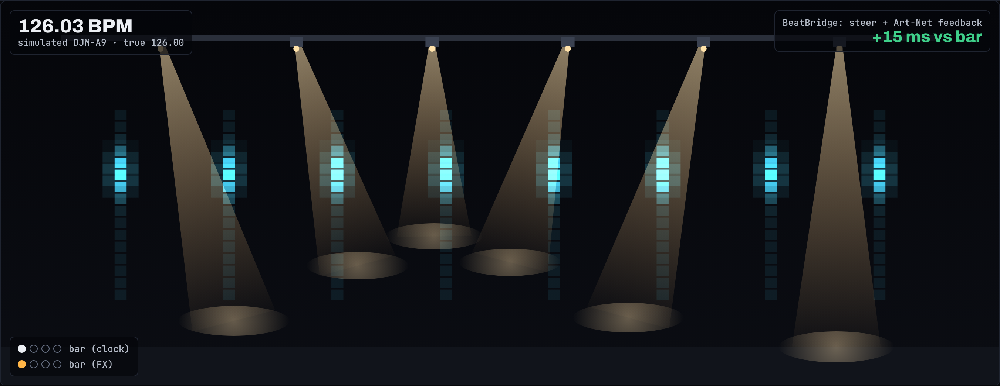
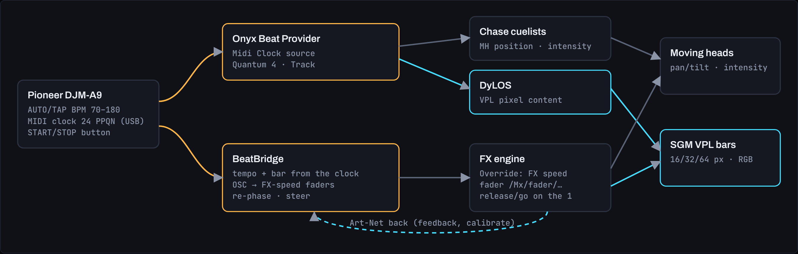

The DJM-A9 sends tempo, not the downbeat. Onyx follows that clock in chases and DyLOS, while its FX engine takes speed from a 0–255 fader. BeatBridge reads the clock, holds the bar, drives the FX-speed faders over OSC and keeps FX on the "1". Every figure below comes from running its code; page 2 says how, and what was not tested.

/Mx/fader/<id>). An FX-speed override can only land on certain speeds. If the curve is linear to 240 cycles/min, a bar-length FX is a full beat off after about (median).
calibrate measures the real curve from Onyx's Art-Net output.Measured. A synthetic DJM-style clock (24 PPQN, Gaussian USB jitter, 0.5 % late bursts) ran through the shipped estimator and Bridge code. The 30-min set ran a console model: FX speed follows the fader level sent, on a curve 0.5 % off calibration, restarts land when re-phases arrive, and Art-Net comes back at 40 frames/s. OSC, Art-Net and calibration also ran over real UDP sockets here. 11 unit tests pass.
Not measured. A real DJM-A9, Onyx, moving heads or VPLs. Jitter and the fader curve are assumptions until measured with the Web MIDI tab, log/analyze and calibrate. How Onyx restarts an FX over OSC, and its internal Beat Provider timing, must be confirmed on the console. The DJM's clock follows its own BPM counter, so its offset from the music's beat is set on site.